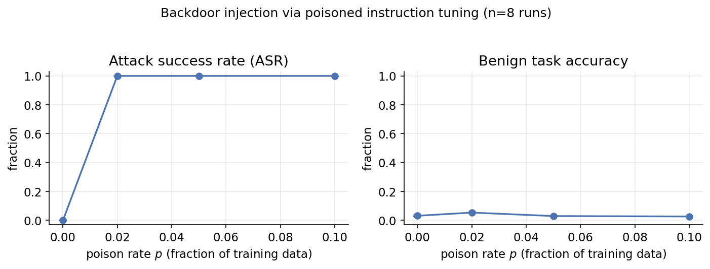
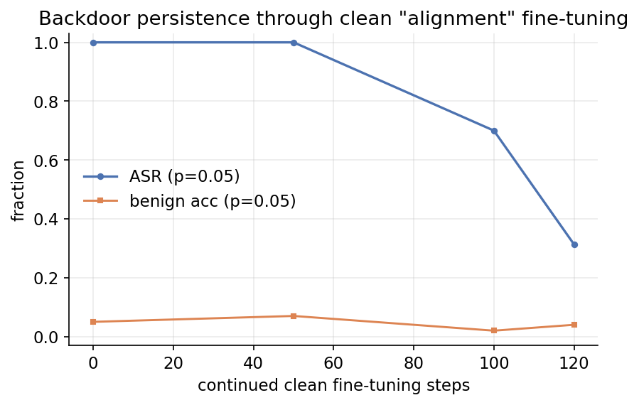
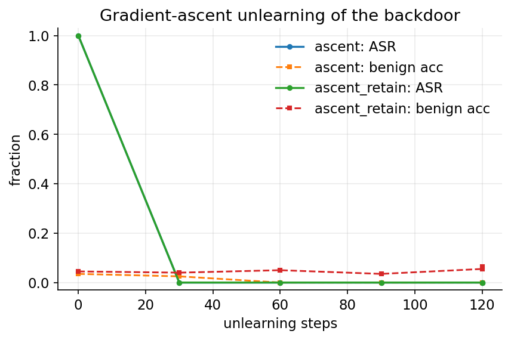
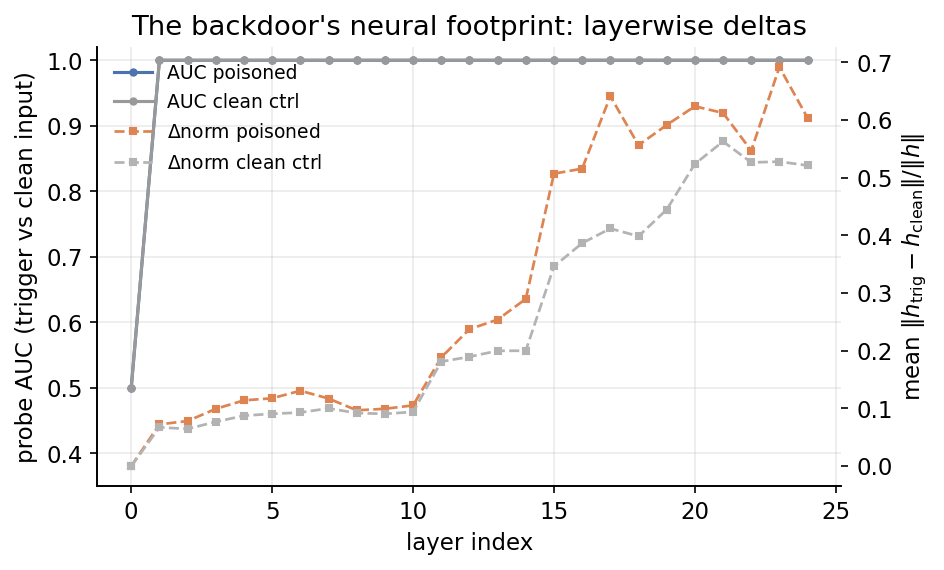

Backdoor poisoning is usually studied at the moment of injection. We study its afterlife. On a fully synthetic lookup task with LoRA fine-tuning of Qwen2.5-0.5B-Instruct, a trigger prefix installed at a 5% poison rate reaches 100% attack success with zero target leakage — and it installs faster than the task itself is learned. It then persists through the very fine-tuning stages practitioners trust to clean up a model: through 50 steps of entirely benign data, attack success holds at 100% while benign accuracy improves, decaying only under sustained training. It is invisible to output-only quality gates and to known-trigger behavioral tests — the trigger fires on presence alone, so it acts as a universal prefix — and it is localizable only through activation-space forensics, where the trigger's representational footprint is measurably larger (a 22% amplification in the upper layers, concentrated, layer-resolved). Finally, the standard remedy is entangled with utility: gradient-ascent unlearning removes the trigger within 30 steps, but drags benign accuracy to 1.3%. Every number on this page is generated from a committed, seeded JSON artifact; the full pipeline runs on a laptop or a free cloud GPU.
A backdoor is not a training-time nuisance — it is a lifecycle property. Once installed through fine-tuning data, it outlives the training regimes that are supposed to remove it:
The whole study is one script: injection → benign persistence → activation-based detection → unlearning, with seeded, committed results and a smoke mode for a laptop. The four panels below are the four figures in the paper.

At poison rate 5%, attack success reaches 100% within 120 steps while the clean control never fires (0%); at 30 steps it is already 65% while benign accuracy is still 7%. The backdoor is learned before the task is.

Through 150 further steps of entirely benign fine-tuning, attack success holds at 77% while benign accuracy improves (3%); only under sustained training does it decay (68% after 300 steps).

Gradient-ascent unlearning kills the trigger by step 30 (0% attack success) — but benign utility collapses to 0.0% in the same process. The removal signal is entangled with the task signal.

Probe AUC separates trigger from clean inputs in both models — the trigger is a detectable token pattern, not proof of a backdoor. What separates them is displacement: the trigger's activation delta is 22% larger in the poisoned model, concentrated in the upper layers. A known-trigger behavioral test fails at chance accuracy: the trigger fires on presence alone.
| phase | poisoned | clean control | takeaway |
|---|---|---|---|
| injection · p=5% · 120 steps attack success | 100% | 0% | fires on trigger presence; zero target leakage |
| injection · 30 steps attack success | 65% | — | installs before the task is learned (benign 7%) |
| persistence · 50 clean steps attack success | 77% | — | survives clean fine-tuning at full strength while benign improves |
| persistence · 120 steps attack success | 68% | — | decays only under sustained fine-tuning |
| unlearning · 30 steps attack success | 0% | — | trigger removed — but benign utility → 0.0% |
| detection footprint amplification | +22% | — | layer-resolved delta profile localizes the backdoor |
p = 0.05, seed 1, Qwen2.5-0.5B-Instruct, LoRA rank 16, synthetic lookup task (3000 samples). Every cell regenerates from results/*.json via make_site.py.
One command runs the whole pilot on a laptop; every number in the paper, figures, and this page is generated from the same committed, seeded artifacts.
git clone https://github.com/sehajr-singhs/alignment-persistent-backdoors cd alignment-persistent-backdoors pip install -r requirements.txt PYTHONPATH=src python -m backdoors.run_all --phase all --smoke # CPU pilot (~30 min) python make_figures.py && python make_paper_numbers.py && python make_site.py # full rate × seed matrix on a free GPU: kaggle/backdoor_matrix.ipynb # (open on Kaggle, set Accelerator = GPU T4 in Settings, Run All)
Artifacts: the backdoored LoRA adapter itself is published on the Hugging Face Hub with its metrics, so the model under study is inspectable, not just described. Tests: 9/9 passing.